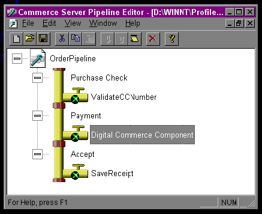

|
| ||
|
| ||
Alex Toussaint
Developer, E-Commerce Web Applications
April 12, 1999
Contents
Introduction
Four Parties: the Merchant, the Software, the Processor, and the Bank
Three Operations: the Authorization, the Capture, and the Refund
Integration with Site Server 3.0 Commerce Edition
Online/Offline Payment Process
Security and Authentication
Other Considerations
Every time a credit card purchase is made over the Internet, an electronic process takes place to execute the financial transaction. More precisely, the process to exchange funds between the buyer and the seller must perform successfully. In this article, I outline the steps necessary to provide credit card support for an e-commerce Web site and demonstrate how Site Server 3.0 Commerce Edition can be used to accomplish this task. I begin by listing the four parties that are usually involved with credit card processing over the Internet. I next discuss the most important operations and provide an example of how to put it all together. Finally, I provide a brief overview of security and a few other external factors.
Let's take a look at the four major parties involved in processing credit cards online. Each party has a distinct function and all work together to transfer the funds from the customer to the merchant. This transfer process is also where a portion of the cost to support an e-commerce site arises, because fees are charged on a per-transaction basis.
The merchant. When a customer makes a purchase from an online store, the transaction gets an authorization number, which is used later to trigger the money transfer from the client. The merchant's credit card processing software will use a merchant ID and a terminal ID to identify the merchant for the processor and the bank. These numbers are the link between the merchant site and its transactions. (The software vendor will usually set up all this information ahead of time.)
The software. The credit card processing software is the conduit that facilitates processing the credit card online. Most popular credit card processing software will work directly from the merchant site to an online gateway facility -- another server on the Internet that receives transactions from sites and processes them. The merchant site will open a connection to the software provider gateway and will transfer the necessary information in encrypted format so that the transaction can take place. To make this connection work, the software vendor will use the merchant's bank information and public key, an encrypted cipher that gets exchanged to verify authenticity, which has been previously established.
The processor. The processor, also referred to as a clearing house, facilitates the funds transfer between banks. It's the agency that actually transfers the money from the customer's bank to the merchant's bank. The processor receives the request for a transaction from the credit card processing software gateway and evaluates whether the transaction can occur. It checks the credit card's validity and if there are enough funds to execute the transaction. Once the outcome is determined, the processor will notify the software gateway, which in turn sends a confirmation number to the merchant's Web site. All this usually occurs in less than 10 seconds. Before signing up with a processor, be sure to check if they accept the credit cards you want to support, including any foreign credit card names.
The bank. This is where the results of your transactions will appear. The processor should have all the information necessary to execute this transfer, including the merchant ID and a terminal ID to identify the merchant to both the bank and the processor.
Now that you are familiar with the four major parties involved in electronic commerce, we can take a look at the most common types of operations your code will perform as customers make purchases from it.
Authorization, capture, and refund are the most common operations your Web site must support in order to accept credit cards. It is important to note that merchants must pay transaction fees for each operation to the processor, so keep that in mind as you design your code. Transaction fees vary according to volume and other factors.
Authorization. This operation takes place when you first process a customer's credit card. It involves the merchant, the software gateway, and the processor. The authorization does not transfer the funds to the merchant account at this point: It just places a hold on the customer's credit card for a specific amount with the merchant's ID. This hold usually lasts no longer than a week. During this period, the merchant must fulfill the order and perform a capture, or reauthorize the amount if the time expires before the order gets shipped. Depending on the processor and the software vendor this reauthorization is done automatically, but it may also mean another transaction charge for the merchant.
Capture. As soon as you confirm that the goods are being shipped, you can send a capture request to the processor. The capture operation involves the merchant, the software gateway, and the bank. The processor evaluates the authorization information and completes the transaction. For digital goods such as software, information access, and immediately accessible online subscriptions, it is common to authorize and capture at the same time. However, for non-digital goods, the capture must take place only after the goods are shipped. There is a small caveat: if an order has several items and only some of them have been shipped, you can capture only the goods that have been shipped. This process is also known as a partial capture. It means that only part of the funds have been transferred. Depending on your processor, you may have to reauthorize the remaining amount due in order to capture the goods that have not yet been shipped.
Refund. This is the reverse of the capture process and involves the merchant, the software gateway, the processor, and the bank. There are several reasons that this operation may need to occur, including returning items, canceling orders, and adjusting captured orders. It usually requires that you provide the original authorization number and the amount to be refunded. The processor will then reverse the funds from the merchant to the client.
Depending on your choice of credit card software you may have other services provided for each operation. Most of these services have to do with fraud detection and credit card address verification. These extra services are also based on service fees and on per-transaction usage.
In this section we explore the integration of your code with Site Server 3.0 Commerce Edition. We will make use of a software pipeline component to process credit card orders, create a pipeline configuration file that binds the component to a stage in the pipeline, and visit the ASP code needed to execute the pipeline.
Companies such as CyberSouce, CyberCash, Verifone, ClearCommerce, and others offer the software necessary to process credit cards over the Web. Their packages usually provide a stand-alone application and a Web-based component version that can be used directly with Microsoft Site Server 3.0 Commerce Edition. Their software component can plug right into the Microsoft Commerce Pipeline as part of the Site Server electronic commerce architecture.
Microsoft Site Server 3.0 Commerce Edition offers a great solution for merchants to set up a store on the Internet. It comes with a series of sample sites that can get you started quickly. It also comes with the Microsoft Commerce Pipeline, which can be used in conjunction with other companies' software components to process credit card payments.
The Microsoft Commerce Pipeline provides a way to represent business process on your site. It models a business process into a framework of stages. Each stage represents an operation of a business object. There could be one or more components operating per stage. The pipeline architecture is very flexible, and you can use the existing stages that are shipped with Site Server 3.0's order pipeline or create your own stages.
For this particular example, I have used the Commerce component from CyberSource; however, most of the other credit card software vendors follow similar implementation. The credit card component plugs right into the Microsoft pipeline. Once the component is configured and enabled, you are ready to start receiving credit card payments on your site. All the information needed for configuration is provided with the component.
Below is a picture of the Microsoft Commerce Pipeline Editor and how the components get connected to the Pipeline. In this case, it's connected on the Payment Stage. You may add new stages to the pipeline or rename existing ones according to your needs. To insert new components, select Insert Component from the Edit menu. A component list will come up and you can make your selection.

Figure 1. The Microsoft Commerce Server Pipeline Editor
The Pipeline editor enables us to create a configuration file, which maps different stages to components. This configuration is loaded by the pipeline object before the pipeline gets executed.
We will now examine some sample code that shows you how to authorize, capture, and refund the customer's credit card. The following code can be run from an ASP page or with some modifications from a Visual Basic® Component Object Model (COM) object. This code must be modified by you to address the business logic requirements of your own e-commerce site.
The first sample performs authorization. The function RunAuthorizationProcess takes an order form as input. The order form works as a dictionary object, holding name and value pairs. In this case we add the shopper information and the credit card to the order form, and run the pipeline with the credit card component.
<%
'**********************************************
' This function takes in an orderform as input
' adds the user data and run the authorization
Function RunAuthorizationProcess(mscsOrderForm)
Dim mscsPipeContext, errorLevel
'Set pipe context
mscsPipeContext("Language") = Request.Form("country")
mscsOrderForm.Value("cc_name") = Request.Form("cc_name")
mscsOrderForm.Value("cc_type") = Request.Form("cc_type")
mscsOrderForm.Value("_cc_number") = Request.Form("cc_number")
mscsOrderForm.Value("_cc_expmonth") = Request.Form("cc_expmonth")
mscsOrderForm.Value("_cc_expyear") = Request.Form("cc_expyear")
mscsOrderForm.Value("bill_name") = Request.Form("bill_name )
mscsOrderForm.Value("bill_phone") = Request.Form("bill_phone")
mscsOrderForm.Value("bill_street") = Request.Form("bill_street")
mscsOrderForm.Value("bill_city") = Request.Form("bill_city")
mscsOrderForm.Value("bill_state") = Request.Form("bill_state")
mscsOrderForm.Value("bill_zip") = Request.Form("bill_zip")
mscsOrderForm.Value("bill_country") = Request.Form("bill_country")
mscsOrderForm.Value("_shopper_first_name") = Request.Form("first_name")
mscsOrderForm.Value("_shopper_last_name") = Request.Form("last_name")
mscsOrderForm.Value("_shopper_email") = Request.Form("email")
mscsOrderForm.Value("_shopper_phone") = Request.Form("phone")
mscsOrderForm.Value("_shopper_street") = Request.Form("street")
mscsOrderForm.Value("_shopper_city") = Request.Form("city")
mscsOrderForm.Value("_shopper_state") = Request.Form("state")
mscsOrderForm.Value("_shopper_zip") = Request.Form("zip")
mscsOrderForm.Value("_shopper_country") = Request.Form("country")
mscsOrderForm.Value("__total_total") = Request.Form("Amount")
'Create a pipeline object and load a configuration file
set pipeline = Server.CreateObject("Commerce.MtsPipeline")
'Set pipeline configuration and log files
Call pipeline.LoadPipe(c:\inetpub\wwwroot\config\auth.pcf)
Call pipeline.SetLogFile("c:\temp\pipeline.log")
'Run pipeline for authorization
errorLevel = pipeline.Execute(1, mscsOrderForm, pipeContext, 0)
'Depending on the result you may run this process
'again or you may need to request a different card
RunAuthorizationProcess = errorLevel
end function
%>
The second sample performs the capture. The function RunCaptureProcess takes an order form as input. We must again provide the shopper information, and this time we must include the authorization number, order_number we received from the previous function. This authorization is the key to complete the transaction.
<%
'**********************************************
' This function takes in an orderform as input
' adds the user data and run the capture
Function RunCaptureProcess( mscsOrderForm )
Dim mscsPipeContext,errorLevel
mscsOrderForm.Value("_total_total") = Request.Form("amount_capture")
mscsOrderForm.Value("_shopper_bill_orderno") = "Your order number"
mscsOrderForm.Value("_shopper_first_name") = Request.Form("first_name")
mscsOrderForm.Value("_shopper_last_name") = Request.Form("last_name")
mscsOrderForm.Value("_shopper_email") = Request.Form("email")
mscsOrderForm.Value("_shopper_phone") = Request.Form("phone")
mscsOrderForm.Value("_shopper_street") = Request.Form("street")
mscsOrderForm.Value("_shopper_city") = Request.Form("city")
mscsOrderForm.Value("_shopper_state") = Request.Form("state")
mscsOrderForm.Value("_shopper_zip") = Request.Form("zip")
mscsOrderForm.Value("_shopper_country") = Request.Form("country")
'Set pipe context
mscsPipeContext("Language") = Request.Form("usa")
'Create a pipeline object and load a configuration file
set pipeline = Server.CreateObject("Commerce.MtsPipeline")
'Set pipeline configuration and log files
Call pipeline.LoadPipe(c:\inetpub\wwwroot\config\capture.pcf)
Call pipeline.SetLogFile("c:\temp\pipeline.log")
'Run pipeline for capture
errorLevel = pipeline.Execute(1, mscsOrderForm, pipeContext, 0)
'Depending on the result you may run this process
'again or you may need to request a different card
RunCaptureProcess = errorLevel
End Function
%>
The last section performs the refund. The function RunRefundProcess takes an order form as input. We must again provide the shopper information and the authorization code from which a capture took place.
<%
'**********************************************
' This function takes in an orderform as input
' adds the user data and run the refund
Function RunRefundProcess( mscsOrderForm )
Dim mscsPipeContext, errorLevel
mscsOrderForm.Value("_total_total") = Request.Form("amount_refund")
mscsOrderForm.Value("_shopper_bill_orderno") = "Your order number"
mscsOrderForm.Value("_shopper_first_name") = Request.Form("first_name")
mscsOrderForm.Value("_shopper_last_name") = Request.Form("last_name")
mscsOrderForm.Value("_shopper_email") = Request.Form("email")
mscsOrderForm.Value("_shopper_phone") = Request.Form("phone")
mscsOrderForm.Value("_shopper_street") = Request.Form("street")
mscsOrderForm.Value("_shopper_city") = Request.Form("city")
mscsOrderForm.Value("_shopper_state") = Request.Form("state")
mscsOrderForm.Value("_shopper_zip") = Request.Form("zip")
mscsOrderForm.Value("_shopper_country") = Request.Form("country")
'Set pipe context
mscsPipeContext("Language") = Request.Form("usa")
'Create a pipeline object and load a configuration file
set pipeline = Server.CreateObject("Commerce.MtsPipeline")
'Set pipeline configuration and log files
Call pipeline.LoadPipe(c:\inetpub\wwwroot\config\refund.pcf)
Call pipeline.SetLogFile("c:\temp\pipeline.log")
'Run pipeline for refund
errorLevel = pipeline.Execute(1, mscsOrderForm, pipeContext, 0)
'Depending on the result you may run this process
'again or you may need to request a different card
RunRefundProcess = errorLevel
End Function
%>
Depending on the credit card processing software you choose, the number of required fields may vary. If you decide to add extra services such as fraud protection, you may have to supply extra user information and analyze in more depth the results you get back after running the pipeline.
Note that mscsOrderForm is an OrderForm object that comes with
Site Server 3.0. and serves as working storage for order form data being
collected or processed. It is defined internally as a structured group
of SimpleList and Dictionary objects. For more information on this object, see "Step Up to Site Server Commerce"  and the Site Server Commerce Resource Kit
and the Site Server Commerce Resource Kit  .
.
Now that you are familiar with the different parties we need to enable credit card processing from your site and are aware of the three operations that are important for processing, we can move on to a few related issues.
Scalability is always a concern when thinking about launching an e-commerce business on the Web. It is hard to predict the number of users that will be visiting your site at any point in time. You can always run multiple computers with your Web site, but credit card transactions can quickly become a bottleneck. Credit card transactions over the Internet can take anywhere from 5 to 20 seconds to process. The time varies depending on current traffic and the transaction load on the clearinghouse processor you are using.
Large Web merchants tend to perform their transactions offline. This means placing the order online and processing the credit card at a later time. For the user, this is a great performance improvement because he or she does not have to wait for the results to come back. For the merchant it is good because a set of dedicated machines can perform commerce transactions. These machines can be separate from the main external network, which can improve security and reduce your per transaction cost by processing orders in batch mode.
There are different strategies for doing offline credit card processing. One way is to work disconnected from the main Web site. To set up this architecture we can use the Microsoft Messaging Queue, MSMQ, to hold the orders to be processed before they become real orders on your system. Because MSMQ has transacted queues you have the additional benefits from the Microsoft Transaction Server (MTS). Some credit card processing software vendors provide the necessary software infrastructure to process transactions in batch, but you can create your own with MSMQ. This is a little beyond the scope of this article, but the Windows NT Server MSMQ site has more information to get you started. See http://www.microsoft.com/ntserver/appservice/downloads/management/MSMQ_developer.asp.
Security is by far the most critical issue concerning electronic financial transactions over the Internet. It is important to create a security and authentication plan and policy for your site. Make your policy visible to all users. Make sure you have thoroughly tested your system before deployment. Here are my top security tips:
From the beginning, security should always be part of any e-commerce site planning, building, and maintenance.
During your planning phase, allow three to four weeks for all the registrations and paperwork to be finalized. Opening a merchant account with a bank to accept credit cards on your site can take several days. The time it takes to register your company with a credit card processing software company and run the registration with a processor may take anywhere from one to two weeks.
Even when everything is set up, you still need time to run tests and make sure the transactions you are making reflect correctly on your bank statements and log files. Transactions are usually logged automatically with the processor, but the funds may take a few days to arrive to your bank. You will need extra time to connect all the dots. By the way, you will need a real credit card to run your final tests.
If you are working under a controlled deployment you may want to take a look at some of the functionality provided by the Microsoft Wallet. See http://www.microsoft.com/wallet/default.asp  .
.
The good news is that the technology available today is much better than what was available two years ago. Credit card processing software vendors have enhanced their products to become simple to use and easy to debug. You now have the knowledge to offer credit card payment support from your Web site.
|
Alex Toussaint has been working with e-commerce Web applications for the past five years. He is currently working with Works.com on their new site. Previous projects include commerce sites for Motorola, Ziff Davis, and PCOrder. When not travelling to Brazil or Hawaii he can be seen in Austin, Texas. Contact him at netoz@yahoo.com. |
Did you find this material useful? Gripes? Compliments? Suggestions for other articles? Write us!
© 1999 Microsoft Corporation. All rights reserved. Terms of use.